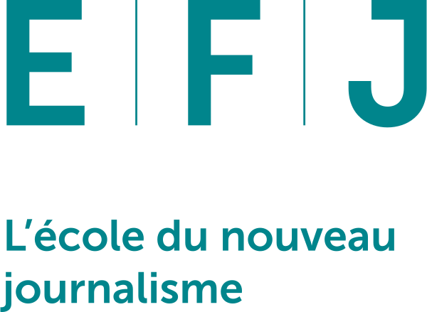

Dylan Kohler
Etudiant en première année de journalisme à l'EFJ Paris. Originaire de Genève, en Suisse.
Expériences :
- Domaine SPORTIF => 12ans de Hockey (dont 3ans en équipe national Suisse) ; 2ans de football américain en niveau semi-professionnel.
- Domaine JOURNALISTIQUE => création du média LMB News, interview et reportage de différentes personnalités médiatique française (Edouard baer ; Jean Lasalle ; Sandrine Sarroche ; Elodie Navarre ; ...).
- Dans le cadre de l'EFJ => Présentation d'une émission en direct sur Twitch (360TV).
Hobbies :
- CULTURE => fort intérêt pour le cinéma, mais aussi la culture de façon plus général.
- SPORT => passionné de sports de combats (Boxe ; MMA ; ...) mais aussi de sport plus classique comme le football ou le Rugby par exemple.
- POLITIQUE => à l'affût de l'actualité politique française, afin demieux appréhender la vison de notre société d'aujourd'hui.
Formations :
-
Maturité gymnasiale Suisse (2ans)
- Diplômé d'un Baccalauréat générale (3ans)
- ...
